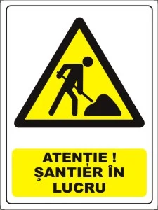

WorkForce
Aceasta este o aplicație modernă pentru gestionarea șantierelor.
Aceasta este o aplicație modernă pentru gestionarea șantierelor.



Poți urmări progresul în timp real și gestiona echipele eficient.